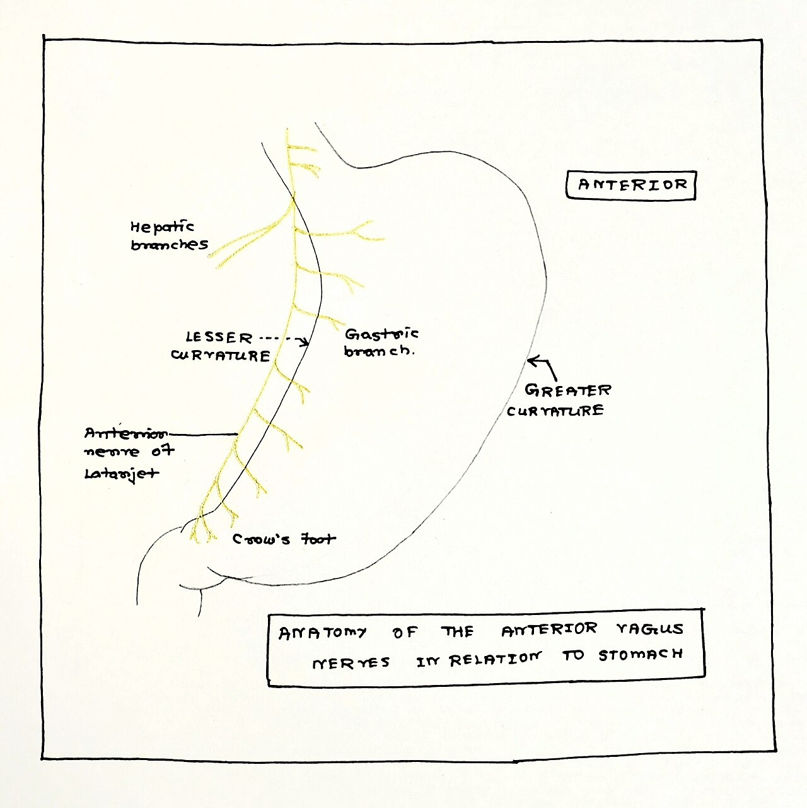

Bản Chất Của Lòng Tin: Thí Nghiệm "Cửa Trượt Định Mệnh" (Sliding Door Moments)
Trong cuốn sách khoa học kinh điển The Science of Trust, Tiến sĩ John Gottman đã kể lại một câu chuyện giản dị nhưng mang tính biểu tượng sâu sắc: - Vào một đêm muộn, ông đang mệt mỏi đọc một cuốn tiểu thuyết trinh thám gay cấn trên giường. Khi đi vào phòng tắm, ông thấy người vợ của mình đang ngồi chải tóc trước gương với khuôn mặt đượm buồn. - Lúc đó, ông đối mặt với một sự lựa chọn sinh tử của mối quan hệ mà ông gọi là Khoảnh Khắc Cửa Trượt (Sliding Door Moment): - Lựa chọn 1: Lờ đi, nhanh chóng quay lại giường đọc tiếp cuốn sách yêu thích để đi ngủ. - Lựa chọn 2: Đặt cuốn sách xuống, bước đến bên cạnh, nhẹ nhàng cầm lấy chiếc lược chải tóc cho vợ và hỏi: "Có chuyện gì làm em buồn tối nay phải không?".
Khoảnh khắc ông chọn bước qua cánh cửa trượt để kết nối chính là viên gạch xây nên lòng tin vững chắc. Ngược lại, mỗi lần ta quay lưng lờ đi một tín hiệu buồn bã của đối phương, một hạt cát xói mòn lòng tin sẽ rơi xuống, lâu dần tạo thành hố sâu ngăn cách.

"Lời Mời Kết Nối" (Bids for Connection): 3 Cách Phản Hồi Sinh Tử
Mỗi ngày, các cặp đôi gửi đi hàng chục đến hàng trăm Lời Mời Kết Nối (Bids)—những cử chỉ nhỏ bé nhằm tìm kiếm sự chú ý, tình cảm hoặc sự sẻ chia (ví dụ: "Nhìn chú chim ngoài cửa sổ kìa em!", "Hôm nay sếp lại khen dự án của anh"):
| Phản Hồi Trước Lời Mời | Hành Vi Cụ Thể Trong Đời Sống | Tỷ Lệ Xuất Hiện Ở Các Cặp Đôi Bền Vững |
|---|---|---|
| 1. Quay Về Phía Đối Phương (Turning Toward) | Ngừng việc đang làm, nhìn vào mắt, mỉm cười và tương tác: "Đâu chú chim nào đẹp thế em?" | Xuất hiện ở 86% số lần (Các cặp đôi ly hôn chỉ đạt 33%). |
| 2. Quay Lưng Lờ Đi (Turning Away) | Tiếp tục dán mắt vào màn hình điện thoại, ậm ừ qua loa hoặc hoàn toàn không phản hồi. | Là thủ phạm hàng đầu gây cảm giác cô đơn và tích tụ sự oán hận thầm lặng. |
| 3. Phản Ứng Tấn Công (Turning Against) | Cáu gắt, mỉa mai: "Có con chim thôi mà cũng làm phiền, không thấy người ta đang bận à?" | Phá hủy lòng tự trọng và bóp nghẹt mọi mong muốn mở lòng trong tương lai. |
Thuyết Gắn Bó (Attachment Theory) & Sự An Toàn Sinh Học Thần Kinh
Theo nghiên cứu tiên phong của Hazan & Shaver (JPSP), người trưởng thành bước vào mối quan hệ với một trong ba phong cách gắn bó chính: 1. Gắn Bó An Toàn (Secure Attachment - 50% dân số): Tin tưởng vào bản thân và đối tác; thoải mái khi thân mật cũng như khi độc lập. 2. Gắn Bó Lo Âu (Anxious Attachment - 20%): Luôn sợ hãi bị bỏ rơi; liên tục cần những lời khẳng định yêu thương; dễ bị kích động khi đối tác chậm trả lời tin nhắn. 3. Gắn Bó Né Tránh (Avoidant Attachment - 25%): Sợ hãi sự phụ thuộc cảm xúc; có xu hướng thu mình vào vỏ ốc, đóng băng hoặc bỏ đi mỗi khi mối quan hệ trở nên quá sâu sắc.
Khoa học thần kinh khẳng định: Một mối quan hệ giàu lòng tin có khả năng "chữa lành thần kinh" (Earned Security). Khi người có phong cách né tránh hoặc lo âu được sống bên cạnh một người bạn đời có phản ứng nhất quán, điềm tĩnh và đáng tin cậy suốt nhiều năm, các mạng lưới tế bào thần kinh của họ sẽ tự tái cấu trúc để chuyển hóa thành gắn bó an toàn!
Giao Thức 4 Bước Xây Dựng Lòng Tin Không Thể Phá Vỡ
- Tuân Thủ Tuyệt Đối Lời Hứa Nhỏ Nhất (Micro-Integrity): Nếu bạn hứa gọi điện lúc 17:00 chiều hoặc hứa mua một món đồ, hãy làm chính xác như vậy. Bộ não đánh giá lòng tin dựa trên sự nhất quán của 1.000 hành động nhỏ bé chứ không phải một lời hứa vĩ đại.
- Luôn "Quay Về Phía Đối Phương" Tối Thiểu 80% Lời Mời: Khi bạn đời cất tiếng nói hoặc chạm vào tay bạn, hãy chủ động ngẩng đầu lên khỏi màn hình điện thoại, giao tiếp ánh mắt trong 3 giây để xác nhận sự hiện diện trọn vẹn của bạn.
- Tuyệt Đối Không Sử Dụng Điểm Yếu Của Đối Phương Để Tấn Công Khi Cãi Nhau: Khi người bạn đời tin tưởng chia sẻ một nỗi tự ti hay vết thương quá khứ, hãy coi đó là một bảo vật thiêng liêng. Đem điểm yếu đó ra mỉa mai khi tức giận sẽ phá hủy hoàn toàn cấu trúc lòng tin đã xây dựng suốt nhiều năm.
- Bảo Vệ Người Bạn Đời Trước Mặt Người Khác (United Front): Khi đứng trước gia đình, bạn bè hay đồng nghiệp, hãy luôn thể hiện sự tôn trọng và bảo vệ bạn đời của mình. Mọi bất đồng chỉ nên được thảo luận riêng tư sau cánh cửa đóng kín của hai người.
Tài Liệu Tham Khảo & Nguồn Y Khoa
- Gottman, J. M. (2011). The Science of Trust: Emotional Attunement for Couples. W. W. Norton & Company. Tài Liệu Nghiên Cứu Gốc Xác Thực ↗
- Simpson, J. A. (2007). Psychological foundations of trust. Current Directions in Psychological Science, 16(5), 264–268. Tạp chí SAGE ↗
- Hazan, C., & Shaver, P. (1987). Romantic love conceptualized as an attachment process. Journal of Personality and Social Psychology, 52(3), 511–524. Báo Cáo Nghiên Cứu Gốc (NCBI PubMed: 3572722) ↗
- Mikulincer, M., & Shaver, P. R. (2016). Attachment in Adulthood: Structure, Dynamics, and Change. Guilford Publications. Tạp chí Guilford ↗